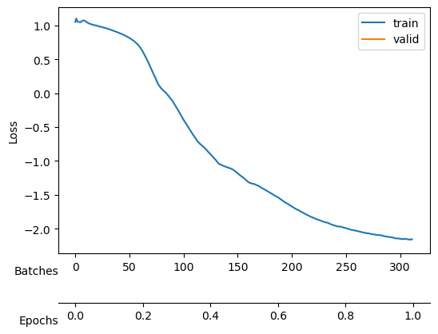

DEVICE= 'cpu' # 'cuda'
print(DEVICE)cpuIn this tutorial, we aim at training SPIVAE with the dataset of scaled Brownian motion (SBM) to extract the aging diffusion coefficient \(D(t)\), and the anomalous exponent \(\alpha\).
To train the models, we use the fastai library that provides easy to use methods. First, we gather everything needed to train (the data, the model, the loss, the optimizer, etc.) into a Learner object. We will use the Learner to hold all the parameters and handle the training procedure.
We start selecting the parameters of the device to train on, the dataset, and the model.
DEVICE= 'cpu' # 'cuda'
print(DEVICE)cpuTo construct the dataset of SBM, we vary \(D_0\) logarithmically inside the range \(10^{-5}\) and \(10^{-2}\) such that the displacements are not much bigger than one. At the same time, we choose \(\alpha\in[0.2, 1.8]\). We take the same amount of trajectories for each combination of parameters, about 100 thousand trajectories in total. We split them in training and validation sets, and select a batch size (bs).
Ds = np.geomspace(1e-5,1e-2, 10)
alphas = np.linspace(0.2,1.8,21)
n_alphas, n_Ds = len(alphas), len(Ds)
ds_args = dict(path="../../data/raw/", model='sbm',
N=int(100_000/n_alphas/n_Ds), T=400,
D=Ds, alpha=alphas,
N_save=1_000, T_save=400,
seed=0, valid_pct=0.2, bs=2**8,)We generate training data as explained in the data docs. You can skip this step if you already generated data using the data generation notebook.
fname = ds_args["path"] + 'sbm.npz'
disp_gen = {f'{a:.3g}'+f',{D:.3g}':[] for D in ds_args["D"] for a in ds_args["alpha"]}
if not os.path.exists(fname): # create
for i,a in enumerate(ds_args["alpha"]):
for j,D in enumerate(ds_args["D"]):
k = f'{a:.3g}'+f',{D:.3g}'
disp_gen[k]=np.array([np.concatenate(([a,D],sbm(ds_args["T_save"], a, sigma = D2sig(D))))
for n in range(ds_args["N_save"])]) # N, T+2
np.savez_compressed(fname,**disp_gen)
print('Saved at:', fname)
else: print(f"{fname} already exists. Load it with load_data().")We create the data loaders dls for training and validation with the parameters we selected above.
dls = load_data(ds_args).to(DEVICE)
dls[1].drop_last = True # for validation to throw the last incomplete batch or not
dls[0].drop_last, dls[1].drop_last, dls[1].bs, dls.device(True, True, 256, 'cpu')We set a small model to train rapidly, but large enough to provide adequate expressiveness. We fix 6 latent neurons, as a priori, we do not know how many neurons will encode the trajectory parameters.
model_args = dict(# VAE #################
o_dim=ds_args['T']-1,
nc_in=1, # 1D
nc_out=6, # = z_dim
nf=[16]*4,
avg_size=16,
encoder=[200,100],
z_dim=6, # latent dimension
decoder=[100,200],
beta=0,
# WaveNet ############
in_channels=1,
res_channels=16,skip_channels=16,
c_channels=6, # = nc_out
g_channels=0,
res_kernel_size=3,
layer_size=4, # 6 # Largest dilation is 2**layer_size
stack_size=1,
out_distribution= "Normal",
num_mixtures=1,
use_pad=False,
model_name = 'SPIVAE',
)We initialize a model and define its loss function as defined in Utils. The initial loss for this dataset is around 1.5, bigger than that the initialization provides an unstable model that may not train properly.
model = VAEWaveNet(**model_args).to(DEVICE)
print('RF:', model.receptive_field, 'bs:', dls.bs)
x,y=b = dls.one_batch(); t = model(x)
loss_fn = Loss(model.receptive_field, model.c_channels,
beta=model_args['beta'], reduction='mean')
l = loss_fn(t,y).item();
print('Initial loss: ',l)
assert l<1.5, 'Initial loss should be around 1.5 or less'RF: 32 bs: 256
Initial loss: 1.0185976028442383We now set a few callback functions to show relevant information during training. The first two update a plot of the total loss for training and validation, and the Kullback-Leibler divergence (\(D_{KL}\)) of the latent neurons, respectively. The other two record the reconstruction loss and the \(D_{KL}\) of each latent neuron.
callbacks = [ShowLossCallback(), ShowKLDsCallback(),
GMsCallback(model.receptive_field,model.c_channels),
KLDsCallback(model.c_channels)]We add two metrics to follow the reconstruction loss and the divergence term during training.
metrics = [GaussianMixtureMetric(model.receptive_field, model.c_channels,reduction='mean'),
KLDMetric(model.c_channels,),
]With all the ingredients, we create the Learner with the default optimizer, Adam.
learn = Learner(dls, model, loss_func=loss_fn, opt_func=Adam, cbs=callbacks, metrics=metrics,)
if torch.cuda.is_available() and DEVICE=='cuda': learn.model.cuda()The learner can show us a summary including the model sizes and number of parameters.
learn.summary()VAEWaveNet (Input shape: 256 x 1 x 399)
============================================================================
Layer (type) Output Shape Param # Trainable
============================================================================
256 x 16 x 397
Conv1d 64 True
ReLU
____________________________________________________________________________
256 x 16 x 395
Conv1d 784 True
ReLU
____________________________________________________________________________
256 x 16 x 393
Conv1d 784 True
ReLU
____________________________________________________________________________
256 x 16 x 391
Conv1d 784 True
ReLU
____________________________________________________________________________
256 x 16 x 16
AdaptiveAvgPool1d
AdaptiveMaxPool1d
____________________________________________________________________________
256 x 512
View
____________________________________________________________________________
256 x 200
Linear 102600 True
ReLU
____________________________________________________________________________
256 x 100
Linear 20100 True
ReLU
____________________________________________________________________________
256 x 12
Linear 1212 True
____________________________________________________________________________
256 x 100
Linear 700 True
ReLU
____________________________________________________________________________
256 x 200
Linear 20200 True
ReLU
____________________________________________________________________________
256 x 512
Linear 102912 True
ReLU
____________________________________________________________________________
256 x 16 x 32
View
____________________________________________________________________________
256 x 16 x 393
ConvTranspose1d 784 True
ReLU
____________________________________________________________________________
256 x 16 x 395
ConvTranspose1d 784 True
ReLU
____________________________________________________________________________
256 x 16 x 397
ConvTranspose1d 784 True
ReLU
____________________________________________________________________________
256 x 6 x 399
ConvTranspose1d 294 True
ReLU
____________________________________________________________________________
256 x 16 x 399
Conv1d 32 True
____________________________________________________________________________
256 x 16 x 397
Conv1d 528 True
____________________________________________________________________________
256 x 32 x 395
Conv1d 1568 True
____________________________________________________________________________
256 x 32 x 399
Conv1d 192 True
Conv1d 272 True
Conv1d 272 True
____________________________________________________________________________
256 x 32 x 391
Conv1d 1568 True
____________________________________________________________________________
256 x 32 x 399
Conv1d 192 True
Conv1d 272 True
Conv1d 272 True
____________________________________________________________________________
256 x 32 x 383
Conv1d 1568 True
____________________________________________________________________________
256 x 32 x 399
Conv1d 192 True
Conv1d 272 True
Conv1d 272 True
____________________________________________________________________________
256 x 32 x 367
Conv1d 1568 True
____________________________________________________________________________
256 x 32 x 399
Conv1d 192 True
Conv1d 272 True
Conv1d 272 True
ReLU
Conv1d 272 True
ReLU
____________________________________________________________________________
256 x 3 x 367
Conv1d 51 True
____________________________________________________________________________
Total params: 262,885
Total trainable params: 262,885
Total non-trainable params: 0
Optimizer used: <function Adam>
Loss function: <SPIVAE.utils.Loss object>
Callbacks:
- TrainEvalCallback
- CastToTensor
- Recorder
- ProgressCallback
- ShowLossCallback
- ShowKLDsCallback
- GMsCallback
- KLDsCallbackFinally, we need a learning rate. Conveniently, fastai includes a learning rate finder. This finder can suggest some points, each based on a criterion that guides us. Hence, we try with one order above and below the default criterion, the valley.
learn.lr_find()SuggestedLRs(valley=0.0005754399462603033)The valley is around \(5\cdot10^{-4}\), thus we will start trying a learning rate of \(10^{-3}\) to see if we can learn fast.
During the search, not only the loss was logged but also the \(D_{KL}\) which we can see here:
plt.semilogy(np.stack(learn.kl_ds.preds)); learn.kl_ds.preds=[]During the training, we will keep an eye on both the total loss and the \(D_{KL}\).
We start training with \(\beta=0\) to have no additional constraint in the latent neurons and allow the VAE to use the full capacity of its bottleneck.
learn.loss_func.beta=0To ease the training, we update the model’s parameters following the learning rate schedule developed by Leslie N. Smith et al. (2017), the 1cycle policy, and already implemented in fastai. We choose as the maximum learning rate the one derived from the finder above.
learn.fit_one_cycle(1, lr_max=1e-3,)| epoch | train_loss | valid_loss | mix_gaussian_loss | kld | time |
|---|---|---|---|---|---|
| 0 | -2.157843 | -2.199759 | -2.199759 | 966.304993 | 01:12 |


With the 1cycle policy we got a good first model, thus we save it and train for a few epochs more.
E=1; model_name = 'sbm' + f'_E{E}'
if not os.path.exists("./models/"+model_name+'.tar'):
save_model("./models/"+model_name, model, model_args, ds_args)Saved at ./models/sbm_E1.tarlearn.fit_one_cycle(16, lr_max=1e-3,)| epoch | train_loss | valid_loss | mix_gaussian_loss | kld | time |
|---|---|---|---|---|---|
| 0 | -2.263310 | -2.267519 | -2.267519 | 1442.309204 | 01:09 |
| 1 | -2.092829 | -2.072918 | -2.072918 | 2818.877197 | 01:15 |
| 2 | -1.981965 | -2.144248 | -2.144248 | 5740.245605 | 01:09 |
| 3 | -1.960727 | -2.105671 | -2.105671 | 8740.739258 | 01:10 |
| 4 | -1.668681 | -1.482724 | -1.482724 | 27266.724609 | 01:10 |
| 5 | -2.079590 | -2.127594 | -2.127594 | 14647.367188 | 01:10 |
| 6 | -2.141758 | -2.256035 | -2.256035 | 14994.700195 | 01:11 |
| 7 | -2.188065 | -2.214240 | -2.214240 | 17237.187500 | 01:10 |
| 8 | -2.242931 | -2.223907 | -2.223907 | 17943.906250 | 01:10 |
| 9 | -2.258962 | -2.299075 | -2.299075 | 19063.156250 | 01:14 |
| 10 | -2.303101 | -2.313661 | -2.313661 | 18943.972656 | 01:11 |
| 11 | -2.321828 | -2.326061 | -2.326061 | 17432.900391 | 01:10 |
| 12 | -2.323314 | -2.324073 | -2.324073 | 16692.931641 | 01:12 |
| 13 | -2.325410 | -2.326961 | -2.326961 | 15656.347656 | 01:12 |
| 14 | -2.336070 | -2.330342 | -2.330342 | 15198.240234 | 01:11 |
| 15 | -2.342307 | -2.330926 | -2.330926 | 15115.720703 | 01:10 |
After training, we see a validation loss around -2.33 and two neurons that contribute the most to the \(D_{KL}\). We take a checkpoint of the model at this moment.
E=1+16; model_name = 'sbm' + f'_E{E}'
if not os.path.exists("./models/"+model_name+'.tar'):
save_model("./models/"+model_name, model, model_args, ds_args)Saved at ./models/sbm_E17.tarNow, we increase \(\beta\) to impose a Gaussian prior into the latent neurons distribution which effectively forces the encoding of the already present information to use the minimal number of neurons while noising out the rest of neurons.
E=17
model_name = 'fbm' + f'_E{E}'
c_point, model = load_checkpoint("./models/"+model_name,device=DEVICE)Loading checkpoint: ./models/fbm_E64.tar
on device: cpulearn.loss_func.beta=1e-4; model_args.update(dict(beta=1e-4))learn.fit_one_cycle(8, lr_max=1e-3,)| epoch | train_loss | valid_loss | mix_gaussian_loss | kld | time |
|---|---|---|---|---|---|
| 0 | -2.265089 | -2.256390 | -2.269281 | 128.906479 | 01:10 |
| 1 | -2.072519 | -2.171102 | -2.193184 | 220.815460 | 01:11 |
| 2 | -2.078890 | -2.010547 | -2.027710 | 171.636841 | 01:11 |
| 3 | -2.150817 | -2.082684 | -2.094985 | 123.012283 | 01:11 |
| 4 | -2.276386 | -2.275580 | -2.283196 | 76.156914 | 01:13 |
| 5 | -2.333585 | -2.269568 | -2.275890 | 63.225800 | 01:11 |
| 6 | -2.331838 | -2.324122 | -2.329123 | 50.004139 | 01:10 |
| 7 | -2.350273 | -2.325296 | -2.330021 | 47.249344 | 01:10 |
We save the model after each cycle, just in case all the neurons collapse due to a big \(\beta\).
E=1+16+8; model_name = 'sbm' + f'_E{E}'
if not os.path.exists("./models/"+model_name+'.tar'):
save_model("./models/"+model_name, model, model_args, ds_args)Saved at ./models/sbm_E25.tarThen, we increase the \(\beta\) and train again.
learn.loss_func.beta=1e-3; model_args.update(dict(beta=1e-3))learn.fit_one_cycle(8, lr_max=1e-3,)| epoch | train_loss | valid_loss | mix_gaussian_loss | kld | time |
|---|---|---|---|---|---|
| 0 | -2.281132 | -2.259779 | -2.279295 | 19.515345 | 01:10 |
| 1 | -1.824657 | -2.179360 | -2.205580 | 26.219692 | 01:11 |
| 2 | -2.211249 | -2.233248 | -2.253192 | 19.943052 | 01:11 |
| 3 | -2.257035 | -2.247903 | -2.264651 | 16.747833 | 01:11 |
| 4 | -2.289768 | -2.278646 | -2.294806 | 16.160137 | 01:11 |
| 5 | -2.303732 | -2.287849 | -2.302872 | 15.023915 | 01:11 |
| 6 | -2.342452 | -2.313574 | -2.328554 | 14.978462 | 01:11 |
| 7 | -2.326436 | -2.314047 | -2.329060 | 15.013249 | 01:11 |
We see the \(D_{KL}\) of two neurons already dropped two orders of magnitude. We increase \(\beta\) and train more.
E=1+16+8*2; model_name = 'sbm' + f'_E{E}'
if not os.path.exists("./models/"+model_name+'.tar'):
save_model("./models/"+model_name, model, model_args, ds_args)Saved at ./models/sbm_E33.tarlearn.loss_func.beta=5e-3; model_args.update(dict(beta=5e-3))learn.fit_one_cycle(16, lr_max=1e-3,)| epoch | train_loss | valid_loss | mix_gaussian_loss | kld | time |
|---|---|---|---|---|---|
| 0 | -2.251511 | -2.252467 | -2.306516 | 10.809682 | 01:10 |
| 1 | -2.252817 | -2.245228 | -2.293772 | 9.708881 | 01:11 |
| 2 | -2.239562 | -2.216622 | -2.256845 | 8.044684 | 01:12 |
| 3 | -2.191882 | -1.953922 | -1.985323 | 6.280288 | 01:11 |
| 4 | -2.178543 | -2.131708 | -2.163971 | 6.452771 | 01:11 |
| 5 | -2.213535 | -2.258947 | -2.288923 | 5.995219 | 01:11 |
| 6 | -2.250787 | -2.235217 | -2.263428 | 5.642315 | 01:12 |
| 7 | -2.231592 | -2.203765 | -2.230007 | 5.248451 | 01:11 |
| 8 | -2.299702 | -2.284002 | -2.309700 | 5.139698 | 01:11 |
| 9 | -2.285194 | -2.205304 | -2.230760 | 5.091110 | 01:13 |
| 10 | -2.293305 | -2.262668 | -2.287017 | 4.869694 | 01:12 |
| 11 | -2.304803 | -2.297028 | -2.321219 | 4.838166 | 01:11 |
| 12 | -2.306652 | -2.300437 | -2.324596 | 4.831745 | 01:11 |
| 13 | -2.299996 | -2.302048 | -2.326326 | 4.855473 | 01:11 |
| 14 | -2.308707 | -2.302276 | -2.326377 | 4.820252 | 01:12 |
| 15 | -2.311806 | -2.302298 | -2.326384 | 4.817187 | 01:12 |
E=1+16+8*2+16; model_name = 'sbm' + f'_E{E}'
if not os.path.exists("./models/"+model_name+'.tar'):
save_model("./models/"+model_name, model, model_args, ds_args)Saved at ./models/fbm_E49.tarAfter training, we see a good reconstruction loss around -2.32, while the \(D_{KL}\) is on the order of one for two neurons and the rest are two orders of magnitude below. We say that two neurons survive while the rest are noised out. We will see in the analysis tutorial how these two neurons encode the minimal relevant information to generate the trajectories.
If we train with a bigger \(\beta\), eventually one neuron drops, affecting the reconstruction loss that is then worse.
learn.loss_func.beta=1e-2; model_args.update(dict(beta=1e-2))learn.fit_one_cycle(16, lr_max=1e-3,)| epoch | train_loss | valid_loss | mix_gaussian_loss | kld | time |
|---|---|---|---|---|---|
| 0 | -2.292675 | -2.278427 | -2.320651 | 4.222384 | 01:09 |
| 1 | -2.265743 | -2.279128 | -2.320320 | 4.119149 | 01:10 |
| 2 | -2.218647 | -2.246289 | -2.288341 | 4.205155 | 01:13 |
| 3 | -2.209015 | -2.225596 | -2.265452 | 3.985472 | 01:12 |
| 4 | -2.248430 | -2.196464 | -2.238191 | 4.172781 | 01:12 |
| 5 | -2.223559 | -2.201737 | -2.243423 | 4.168562 | 01:12 |
| 6 | -2.249357 | -2.239655 | -2.279761 | 4.010539 | 01:14 |
| 7 | -2.224961 | -2.210147 | -2.251729 | 4.158061 | 01:13 |
| 8 | -2.267192 | -2.271090 | -2.312112 | 4.102235 | 01:14 |
| 9 | -2.283242 | -2.274777 | -2.314433 | 3.965613 | 01:13 |
| 10 | -2.279653 | -2.275052 | -2.314808 | 3.975609 | 01:13 |
| 11 | -2.274931 | -2.281827 | -2.321421 | 3.959441 | 01:12 |
| 12 | -2.280176 | -2.282479 | -2.321944 | 3.946445 | 01:12 |
| 13 | -2.283632 | -2.282778 | -2.322360 | 3.958159 | 01:12 |
| 14 | -2.301415 | -2.283230 | -2.322545 | 3.931563 | 01:11 |
| 15 | -2.300677 | -2.283238 | -2.322650 | 3.941171 | 01:12 |
learn.loss_func.beta=4e-2; model_args.update(dict(beta=4e-2))learn.fit_one_cycle(16, lr_max=1e-3,)| epoch | train_loss | valid_loss | mix_gaussian_loss | kld | time |
|---|---|---|---|---|---|
| 0 | -2.204268 | -2.183239 | -2.304005 | 3.019161 | 01:11 |
| 1 | -2.194592 | -2.175812 | -2.292791 | 2.924464 | 01:12 |
| 2 | -2.145626 | -2.180877 | -2.293877 | 2.824981 | 01:12 |
| 3 | -2.079138 | -2.172214 | -2.287631 | 2.885419 | 01:11 |
| 4 | -2.127781 | -2.103078 | -2.214047 | 2.774220 | 01:12 |
| 5 | -2.113369 | -2.036130 | -2.148762 | 2.815787 | 01:11 |
| 6 | -2.166729 | -2.182533 | -2.285766 | 2.580839 | 01:12 |
| 7 | -2.168032 | -2.187016 | -2.293549 | 2.663330 | 01:12 |
| 8 | -2.175102 | -2.190198 | -2.295090 | 2.622296 | 01:14 |
| 9 | -2.210599 | -2.195347 | -2.298699 | 2.583786 | 01:11 |
| 10 | -2.217565 | -2.165514 | -2.270107 | 2.614821 | 01:11 |
| 11 | -2.200825 | -2.198460 | -2.301876 | 2.585433 | 01:11 |
| 12 | -2.199532 | -2.199680 | -2.303985 | 2.607617 | 01:12 |
| 13 | -2.214851 | -2.200226 | -2.303653 | 2.585687 | 01:11 |
| 14 | -2.215913 | -2.200113 | -2.304406 | 2.607338 | 01:11 |
| 15 | -2.224487 | -2.200450 | -2.304470 | 2.600497 | 01:11 |